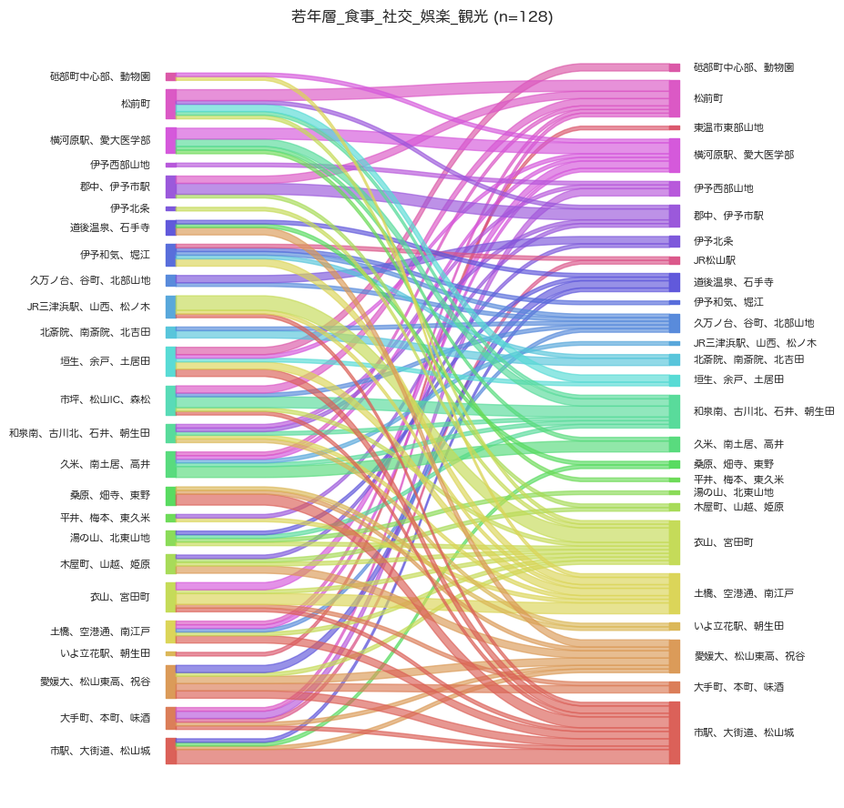
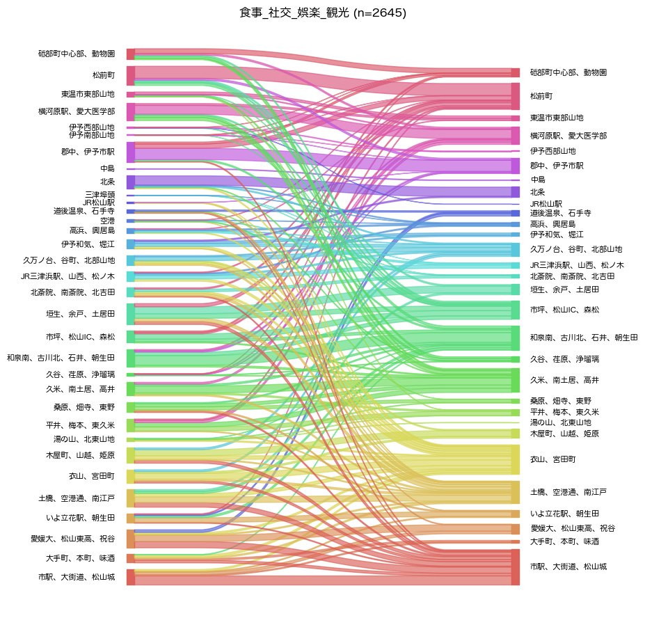

解説 5
若年層の、食事・社交・娯楽・観光のトリップの目的地を図1に示します。 人口全体と概ね似た傾向ですが、松山市11区 (久米、南土居、高井)や松山市14区 (市坪、松山IC、森松)といった幹線道路沿いの地区が少なく、 松山市1区 (市駅、大街道、松山城)や松山市22区 (道後温泉、石手寺)といった中心市街地と、東温市1区 (横河原駅、愛媛大学医学部)や松前町といった郊外のショッピングモールのある地区への移動が多くなっています。 よって、すでに余暇活動の目的地として選ばれている中心部の魅力を高めることで、若年層の外出率や移動をさらに増加させることができると考えられます。

(a) 若年層

(b) 人口全体
図1：食事・社交・娯楽・観光目的の出発地（左列）と到着地（右列）